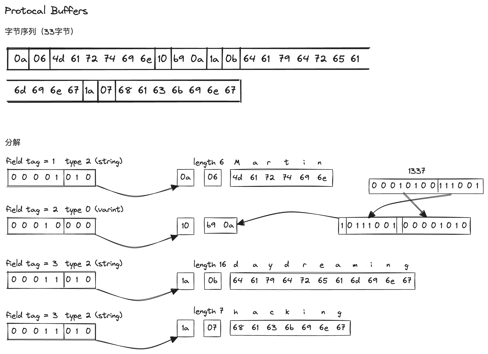
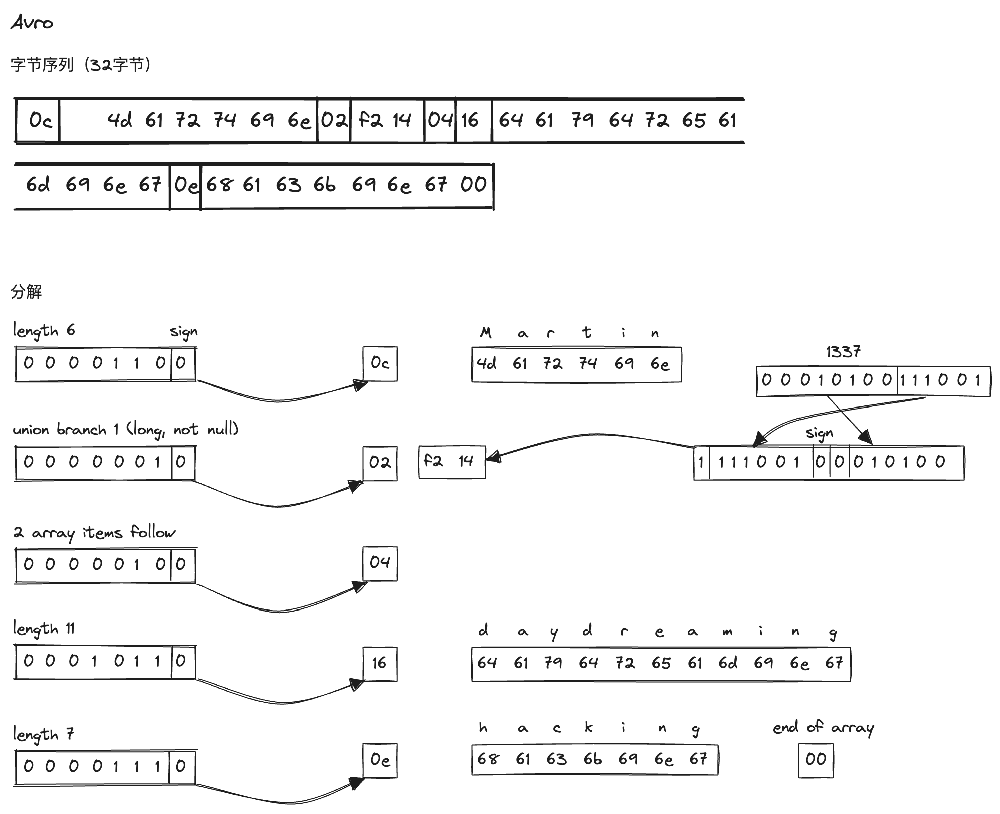
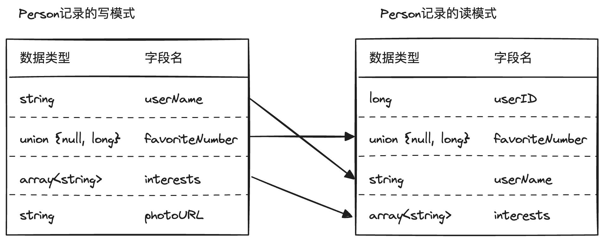

第4章 数据编码与演化
本章对比了JSON、Thrift、Protocol Buffer、Avro几种编码方式在模式演进时如何保持兼容性，更好的支持程序滚动升级。随后列举了几种进程间数据交互的方式，这些交互方式利用之前介绍的数据编码方案保持服务的兼容性。
- 向后兼容：较新的代码可以读取较旧的代码编写的数据，新代码兼容旧数据
- 向前兼容：旧代码兼容新数据
一般而言，向后兼容比较容易，因为编写新代码时，清楚旧数据的格式。
数据编码格式
程序数据两种表示形式：
- 内存中的数据结构。
- 为了写入文件或网络传输的字节序列。
前者转为后者称为编码（也称序列化），后者转为前者称为解码（也称反序列化）。
语言特定的格式
JSON和XML
{
"userName": "Martin",
"favoriteNumber": 1337,
"interests": ["daydreaming", "hacking"]
}
文本形式，易读性强，开发调试友好，数字编码有模糊之处，缺少模式，占用空间大。
Thrift和Protocol Buffer
Thrift有两种编码格式，为BinaryProtocol和CompactProtocol。Protocol Buffer常被称为pb，只有一种编码方式，和Thrift的CompactProtocol非常类似。由于Thrift和Protocol Buffer二者非常类似，因此下面只介绍pb。
接口定义语言（IDL）描述模式
message Person {
required string user_name = 1;
optional int64 favorite_number = 2;
repeated string interests = 3;
}

模式随着时间不断变化，称为模式演化。
添加新字段时，向前兼容通过忽略不认识的字段实现，向后兼容不能添加必填（required）字段。删除字段时向前和向后兼容性和添加字段时相反。这意味着只能删除非必填字段，而且之前的字段标签不能再用，免得老代码写入的数据被够被新代码忽略。
数据类型改变在某些方式是支持的，比如pb的单值到多值的互转，但是面临着潜在的数据丢失问题。
pb相比json占用空间更小的原因
- 使用字段标签（tag）代替了字段名。
- 紧凑的二进制编码，避免了文本编码的许多元字符，比如逗号，引号。
- 使用可变长度的int编码整型字段（varint，字节最高位标识是否还有下一个字节），进一步降低了空间占用。
Avro
Avro是Hadroop孵化出得一个项目，广泛地用在Hadroop生态中。
当应用程序想要对某些数据进行编码，它使用所知道的模式模式的任何版本来编码数据，这被称为写模式。当应用程序想要解码某些数据，它期望数据符合某个模式，即读模式。

Avro的关键思想是，写模式和读模式不必是完全一模一样，它们只需保持兼容。例如，写模式和读模式字段顺序不同，这也没有问题，因为模式解析通过字段名匹配（这里不太懂，编码的时候没有将字段名编码进去，那解码是如何根据字段名匹配呢？）。如果一个字段写模式有读模式没有，则忽略，反之，则用默认值填充。

相比pb和thrift，avro对动态模式支持更好。
总结下，二进制编码的好处：
- 比json这种文本格式更紧凑，因为省略了字段名称。
- 模式是一种强制的自描述的文档[1]。
- 更好的向前兼容和向后兼容。
- 静态语言可以通过代码生成获得编译时类型检查。
进程间数据流动
基于数据库的数据流
这种方式或许是大家见得最多，使用得最多的一种方式了。也就是应用程序将数据库当作中转站，将数据写入，并在之后读取写入的数据，通常会涉及多种不同功能的服务以及众多的接口。
基于服务的数据流：REST和RPC
服务器公开的API称为服务。
将大型应用程序按照功能分解为较小的服务，当一个服务需要另一个服务的功能或数据时，就会向另一个服务发出请求。这种构建应用程序的方式被称为面向服务的体系架构（service-oriented architecture，SOA），或者微服务体系结构（microservices architecture）。
微服务体系的一个关键设计目标是，通过使服务可独立部署和演化，让应用程序更易于修改和维护。
当HTTP为用作底层通信协议时，它被称为Web服务。有两种流行的Web服务方法：REST和SOAP。
REST不是一种协议，而是一个基于HTTP原则的设计理念。它强调简单的数据格式，使用URL标识资源，并使用HTTP功能进行缓存控制、身份验证和内容类型协商。根据REST原则设计的API称为RESTful。
SOAP是一种基于XML的协议，用于发出网络API请求。虽然它最常用于HTTP，但其目的是独立于HTTP，并避免使用大多数HTTP功能。相反，它带有庞大而复杂的多种相关标准（Web服务框架，Web Service Framework，称为WS-*）和新增的各种功能。SOAP Web服务的API被称作WSDL（Web Service Description Language）来描述。
SOAP消息复杂，严重依赖工具支持、代码生成和IDE，不同厂商实现之间标准不一。RESTful倾向于更简单的方法，涉及较少的自动化工具和代码生成，受到小公司的青睐。
到底什么是REST？
REST全称Resource Representational State Transfer，资源表现层状态转移。这名字越听越让人糊涂，它的真正意思是用url标识资源位置，用HTTP动词（GET/POST/DELETE/PUT）表示操作，用HTTP状态码标识访问状态。
它的一些最佳实践：
- 使用名词，而不是动词，且推荐名词复数。
BAD /getProducts /listOrders /retrieveClientByOrder?orderId=1 GOOD GET /products : will return the list of all products POST /products : will add a product to the collection GET /products/4 : will retrieve product #4PATCH /PUT /products/4 : will update product #4- 保证HEAD和GET是安全的，不改变资源状态。
- 资源地址采用嵌套结构，例如
GET /friends/10375923/profile这样做地好处是啥呢？
- 看url就知道请求的什么资源。
- 看method就知道要干什么。
- 看状态码就知道结构如何。
基于消息传递的数据流
与RPC相比，使用消息代理有几个优点：
- 接受方不可用或过载，消息代理可以充当缓冲区，也就是常说的削锋作用。
- 自动重发，防止消息丢失。
- 避免了发送方需要知道接受方的ip和端口。
- 支持一条消息发送给多个接受方。
- 逻辑上将发送方和接受方分离，也就是解耦作用。
消息传递是单向的，RPC通常是双向的，消息是fire-and-forget。
两种实现：
- 消息代理，也就是MQ。
- 分布式Actor模型。
分布式Actor框架的实质是将消息代理和Actor模型集成到单个框架中。
这一点的重要性相信调过别人接口的人都知道，当你使用一个json接口，很难有人能说清这个json会包含哪些字段，更比提每个字段的意义了。 ↩︎